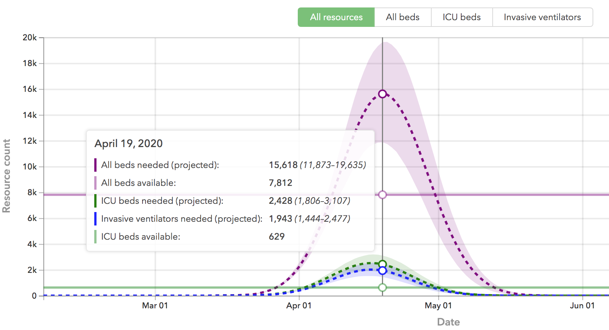
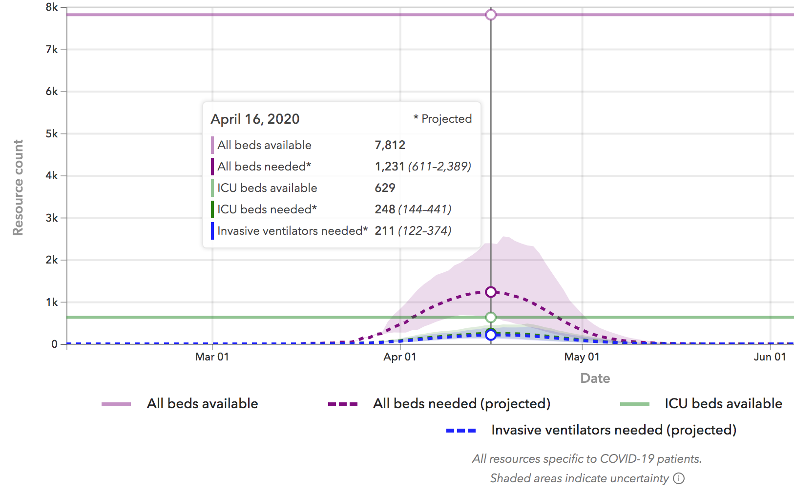
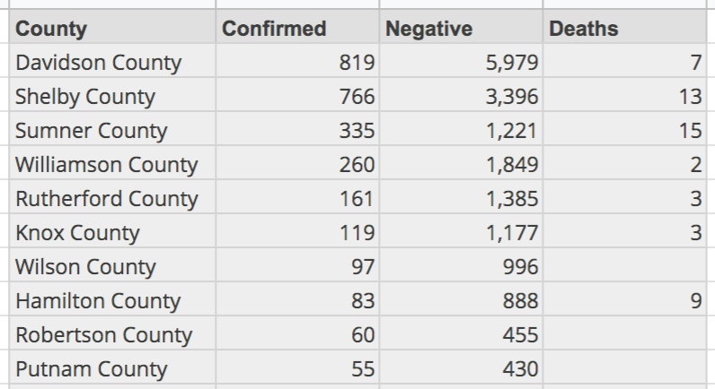

Analysis of April 2020 Covid-19 Impact vs Hospital Resources (v1.3) for Hamilton County, TN
Author: Josh Patterson
Date: April 6th, 2020
The Covid-19 pandemic has quickly shut down the nation and the world at large. This blog post is designed to extrapolate a U.S. county-level forecast from national and state trends for the month of April. We use state-published data along with trends from other states to build a forecast for Hamilton County, TN for the month of April. Further, we compare the forecasted covid-19 impact for April in Hamilton County with known/published information known about the available hospital and ICU beds at the major hospitals in Hamilton County.
Part of the motivation for this analysis was getting involved in the makers community for creating Personal Protective Equipment to help meet the need for our county based on the upcoming surge. Quickly makers came online and joined our calls (organized by Andrew Rodgers), and there was an obvious ability to produce goods. A challenge became quickly obvious in that it was not clear "what to make" and "how much", as the challenge was quickly changing as new news came online. Beyond that, it is hard to tell how all of this would hit Hamilton County specifically. This report was partially inspired to help inform how to approach the PPE production challenges at hand.
Link to PPE Maker Tracking gdoc Spreadsheet
Our effectiveness as local communities is what will eventually drive the spread rate down (r0 < 1). To that end, being based in Hamilton County, we wanted to generate a regional forecast as part of helping to communicate the local challenges ahead in the month of April.
Given this is something we normally would not blog about, we felt it compelling content as many in the community only see national numbers and its hard to extrapolate those into "how does this affect my local community". Each state, city, and county will see different growth rates and effects from this pandemic, so it makes sense to be able to see the macro-level data tailored to a specific region (e.g., "county"). This report is focused on building some foundational analytics for our region to help better tailor our community's response.
Our intent for this report is for regional readers to get a better sense in how the Covid-19 trends will affect their region across the next 30 days.
Disclaimers
This report was created by Patterson Consulting as a public service analysis. No hospital in Hamilton County nor the County itself are currently endorsing this report. This report is meant for informational purposes only, and is provided "as is". The report is not intended for investment or operations planning.
Patterson Consulting does not employ any epidemiologists, but we do analyze data and provide forecasts for Fortune 100 companies[Other Initiatives]. The model in this report does not make any macro/national trend forecasts; it only uses national forecasts to inform a regional Hamilton County forecast and then compares this vs known/published hospital resources.
Report Summary
Hamilton County has a manageable peak of Covid-19 hospitalizations and ICU admissions through the month of April based on the newer national model from IMHE.
Assumptions, Approach, and Caveats
To build this model we took the data from the state of Tennessee's COVID-19 website and John Hopkin's data and analyzed:
- How fast the positive covid-19 tests were growing Nationally and Tennessee
- How many people were hospitalized in Tennessee from Covid-19
- How many people were in ICU in Tennessee from Covid-19
Armed with this data, we build a spreadsheet for April forecasting "every day of April based on Tennessee's compounded growth rate (8%)":
- what is the positive Covid-19 count?
- what is the cumulative hospitalized count based on Tennessee's Covid-19 hospitalization rate? national rate?
- what is the cumulative patient ICU count?
Current national forecasts indicate Tennessee will hit the peak of the growth rate near the last week (April 15th) of April. However, we'll still be adding new positive cases, so even if we're over-projecting assuming postive count growth through the end of the month, this introduces noise but hopefully not excessive.
Other things we should note about how testing works in the United States: not every county or hospital tests with the same criteria. Some counties do not report hospitalization or ICU numbers either.
It should also be noted that we are looking at total positives rate across the month of April vs how many beds and ICU beds are available in the Hamilton County hospital system. A future better version of this report for resource utilization would model how patients get better and stop consuming resources at the hospital at the end of a window of time.
Data Sources
Raw data analyzed is from the daily data being pulled from
- The Covid Tracking Project, TN data archives
- The Tennessee state website for Covid-19 reported statistics
- State-level forecasts from Healthdata.org
Current State of Tennessee Impact for Covid-19
To set context let's start with the IHME (Org. that is part of the University of Washington) model (healthdata.org) for how Covid-19 will impact at the state level for the state of Tennessee.
If we look at the model on April 2nd, as seen below, we see a large spike of Covid-19 infections forecasted for April 19th.
On April 5th IMHE update the model inputs for their model based on new data coming online as U.S.-projections have gotten better, as we can see in the updated image below (April 6th):
The IHME model, and all good models, should be updated as conditions change on the ground. These updates will, by necessity, cause forecasts to change. This is desirably in the same way we desire meteorologists to update their hurricane models multiple times a day as a storm approaches land.
It appears the curve is starting to flatten for at least the state of Tennessee. Let's now move towards a model specifically for Hamilton County.
Hamilton County Relative to Other Tennessee Counties
Based on the rankings of counties in the state of Tennesse, Hamilton County currently (Apr 6th) sits at 8th in terms of most positive Covid-19 cases, as seen in the table below.

Building a Forecast for Covid-19 in Hamilton County for April 2020
To build out a model for hospitalization and icu admission rates due to Covid-19 growth, we need to forecast out the rest of April (daily). To build this daily forecast we need a growth rate (day over day)
In the chart below we can see the trajectory for Covid-19 growth rates per southeastern US State. This chart was built based on data from the John Hopkins Whiting School of Engineering.

We can see that the state of Tennesee's current (as of April 6th) Covid-19 growth rate is 8% day over day (8% compounded daily growth rate). If we take this number, we can forecast the remaining days cumulative positive covid-19 counts in April as shown in the embedded spreadsheet below.
Developing Rates for Hospitalizations and ICU Admissions
To forecast hospitalization counts (cumulative) we can calculate this for the state of Tennessee based on the data published on the state Covid-19 website. On April 2nd this rate was 7.45% and on April 6th the rate was 9.25%; Obviously this number is shifting as new data gets reported for Tennessee, so we'll use both the latest rate for Tennessee and compare that rate to the national rate as calculated below.
34 states are reporting "hospitalized cumululative" numbers as of 4/6/2020 per the data from the site https://covidtracking.com/data.
Based on states that report "hospitalizations - cumulative" (34 states, as of 4/6/2020) we see an average hospitalzation rate across the dataset as 16.7%.
Based on states that report "ICU admissions cumulative" (9 states, as of 4/6/2020) we see an average ICU admission rate across the dataset as 4.95%. Tennessee does not report this statistic, so we'll use the national average to forecast the "ICU Admissions cumulative (covid-19 related)" metric for Hamilton County.
The above table makes a few assumptions:
- Tennessee's state growth rate stays constant; it likely will not, and will start to decline in the second half of the month per the IHME model.
- larger scale effects of social distancing don't further lower the numbers
Analysis of Known Hamilton County Hospital Resources
The office of Hamilton County Office of Emergency Management provided the following resource levels to News Channel 9 as reported on their website:
- Available ventilators: 396
- Available medical beds: 293
- ICU Beds: 53
- Pediatric Beds available: 43
- Pediatric Critical Care Beds: 11
The currently forcasted cumulatively admitted ICU Covid-19 patients for Hamilton County (per the model above) is 30 (rounded up). Hamilton County should also be able to cover that number as well, with spare ventilators as backup.
For reference in terms of ICU resource usage, based on a study from the New England Journal of Medicine, the median length of ICU stay among survivors was 14 days.
Footnotes
Footnote: [Other Initiatives]
Other tangentially relevant Patterson Consulting initiatives:
- Analytics work supporting research at the University of Michigan on ICU admissions during disasters
- Smart city analytics support for the University of Tennessee at Chattanooga's CUIP group (see our previous article on analying PM2.5 air quality data)